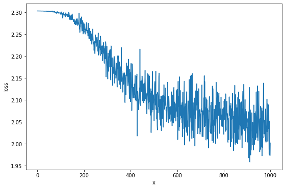

使用神经网络训练CIFAR(03)
激励函数
为什么需要激励函数？
因为在现实中，有很多的数据都不是可以使用一个线或者一个平面进行分割的，而根据维基 百科的定义，线性函数是指：线性函数是只拥有一个参数的一阶多项式函数。所以需要引进 非线性函数用来解决线性函数的不足。这种位于层中的非线性函数被称为激励函数。
从另一个角度，如果没有激励函数，那该网络仅仅能表达线性处理，这样即使具有更多的隐 藏层，其功能都可以用单层的神经网络进行实现，表明，如果没有激励函数为模型提供非线 性转化，那隐藏层是没有作用的。
激励函数与损失函数：激励函数用于提供非线性功能，而损失函数用于计算预测结果与实际 结果之间的差异。
激励函数作为一个神经元，用于对输入变量进行处理，事实上任何数学函数都可以作为激励函数。 常见的激活函数有以下几个：
Sigmoid
非线性函数，取值范围为[0, 1], \(\sigma(x) = \frac{1}{1 + exp(-x)}\) 主要将一个值 归一化，即压缩到0与1之间，根据公式可以看出，大的负数值将会被求值为0，而大的正数 值将会被求值为1。
f_sigmoid = lambda x: 1.0 / (1.0 + np.exp(-x))
def f_plot(f, x):
y = list(map(f, x))
plt.style.use('ggplot')
plt.plot(x, y, 'r-')
plt.plot([0.0, 0.0], [min(y) -1, max(y)+1], 'b-')
plt.plot([-10.0, 10.0], [0.0, 0.0], 'b-')
plt.xlabel('x')
plt.ylabel('y')
x = np.arange(-10, 10, 0.001)
f_plot(f_sigmoid, x)

缺点：
在 sigmoid 的两端即位于0或者1上的点的梯度都是0(也称为：饱和)，如果一开始所给予过大 的权重，将会直接被判断为1，将不会被学习。函数输出的结果不是以0为中心化的，而且都 是为大于0。
函数
def sigmoid_forward(x):
out = 1.0 / (1.0 + np.exp(-x))
cache = (x)
return out, cache
def sigmoid_backward(dout, cache):
x = cache
dx = dout * (np.exp(-x) / (1 + np.exp(-x)) ** 2)
return dx
tanh
非线性函数，取值范围为[-1, 1]，Sigmod变体，但是为0中心化的，\(tanh(x) = 2\sigma(2x) - 1\)
f_tanh = lambda x: 2.0 * f_sigmoid(2.0 * x) - 1.0 f_plot(f_tanh, x)

函数
def tanh_forward(x):
out, _ = sigmoid_forward(2.0 * x)
out = 2.0 * out - 1.0
return out, x
def tanh_backward(dout, cache):
x = cache
dx = 2.0 * sigmoid_backward(dout, 2.0 * x)
return dx
修正线性单元(ReLU)
ReLU(Rectified Linear Unit)函数表示成\(ReLU(x) = max(0, x)\)。从斜率的角度看就是， 当x大于0,斜率为1,否则为0。因为ReLU的缺点，所以在使用时，需要小心模型学习速率，如 果很关心学习的速率，可以尝试Leaky ReLU或者Maxout。
f_relu = lambda x: x if x > 0 else 0 f_plot(f_relu, x)

优点：
在随机梯度下降中，比tanh/Sigmod的收敛速度更快，并由于其是线性的，不会出现饱和现 象(指当达到一定的阀值后，值不会发生改变，如Sigmod中的，当达到一定程度后，很大的 数求值为1,很小的数求值为0，位于两点的梯度都为0，造成梯度消失(kill gradient)。与 tanh/Sigmod相比，计算量更小，只需要判断，而tanh/Sigmod需要计算指数。
缺点：
ReLU很脆弱，如果当具有一个很大的梯度通过一个ReLU神经元时，将会导致这个神经元“死 掉”。这是因为大的梯度，导致权重更新的步伐过快，将可能导致可以通过调整更低的学习速率进行解决。
函数
def relu_forward(x):
out = np.maximum(0, x)
return out, x
def relu_backward(dout, cache):
x = cache
dx = dout
dx[x < 0] = 0
return dx
泄漏ReLU(leaky ReLU)
为了解决ReLU“死掉”问题而设计，当 x<0 时，将给予一个微小的数，而不是0。就如，当 \(x<0 f(x) = ax\) 当 \(x>=0 f(x)=x\), 其中a代表一个常数，在一些方面可以取得很好 的结果，但一些方面结果并不令人满意。
f_leaky_relu = lambda x: x if x >= 0 else 0.25*x f_plot(f_leaky_relu, x)

函数
def leaky_relu_forward(x):
out = np.where(x < 0, 0.25*x, x)
return out, x
def leaky_relu_backward(dout, cache):
x = cache
dx = dout
dx[x < 0] *= 0.25
return dx
Maxout
将多个激励函数进行合并，表达式为: \(max(F_1, F_2, ...)\) ，当后面的\(F_2, ..., F_n\)为0时退化为ReLU函数，防止梯度消失(饱和)， 有避免ReLu的缺点(因为梯度过大导致 神经元“死掉”)，但这样，其对于每一个神经元必须需要传递两个参数以上的变量。
f_maxout = lambda x: f_sigmoid(x) if f_sigmoid(x) > f_relu(x) else f_relu(x) f_plot(f_maxout, x)

前向传播
前向传播就是平时看到的传播模式，就是一个一个接着往下传播。简单的前向传播实现，主
要用于理解前向传播的思想。神经网络中的 channel 是指每一个样本中的第三维度，就
图片来说，一般具有 RGB 三层。而 depth 是指隐藏层的个数，一般也称为内核个数。
添加 zero padding 是为了保持输出的采集结果维度与原来的相同。
采集结果的矩阵的维度计算：
- \(height = (X_{height} - W_{height} + 2 * ZeroPadding) // stride + 1\)
- \(wight = (X_{width} - W_{width} + 2 * ZeroPadding)\)
np.pad() 对一个矩阵进行填补。
卷积前向传播算法
这个简单的算法使用的仅仅是线性组合。\(f(x_i, W, b) = W x_i + b\)
def forward_pass(input_volumes, input_weights, input_biases, stride=1, zero_padding=0):
'''
Inputs:
------------------------------------------------------------
- input_volumns: the train dataset. (N, channel, width, height)
- input_weights: the weights array. (K, channel, widht, height)
- input_biase: the biases. (K, )
- zero_padding: the size of padding for zero.
Outputs:
------------------------------------------------------------
- dout: The weights array collection result. (N, K, o_height, o_width)
- cache: The parameters cache. (dict)
'''
x_num, x_channel, x_height, x_width = input_volumes.shape
w_num, _, w_height, w_width = input_weights.shape
o_height = (x_height - w_height + 2*zero_padding) // stride + 1
o_width = (x_width - w_width + 2*zero_padding) // stride + 1
X = np.pad(input_volumes, ((0, 0), (0, 0), (zero_padding, zero_padding), (zero_padding, zero_padding)),
"constant", constant_values=0)
# 每一个采集器只会产生一个二维的数组
dout = np.zeros((x_num, w_num, o_height, o_width))
# 对样本迭代，即对每一张图片进行迭代
for n in range(x_num):
# 对多个采集器进行迭代采集
for k in range(w_num):
for y in range(0, o_height):
for x in range(0, o_width):
# 利用输出的维度，反推采集的区域
dout[n, k, y, x] = np.sum(
X[n, :, y*stride:y*stride + w_height, x*stride:x*stride + w_width] * input_weights[k]
) + input_biases[k]
cache = (input_volumes, input_weights, input_biases, stride, zero_padding)
return dout, cache
测试数据
x_shape = (2, 3, 4, 4)
w_shape = (3, 3, 4, 4)
x = np.linspace(-0.1, 0.5, num=np.prod(x_shape)).reshape(x_shape)
w = np.linspace(-0.2, 0.3, num=np.prod(w_shape)).reshape(w_shape)
b = np.linspace(-0.1, 0.2, num=3)
# 正确的答案
correct_out = np.array([[[[-0.08759809, -0.10987781],
[-0.18387192, -0.2109216 ]],
[[ 0.21027089, 0.21661097],
[ 0.22847626, 0.23004637]],
[[ 0.50813986, 0.54309974],
[ 0.64082444, 0.67101435]]],
[[[-0.98053589, -1.03143541],
[-1.19128892, -1.24695841]],
[[ 0.69108355, 0.66880383],
[ 0.59480972, 0.56776003]],
[[ 2.36270298, 2.36904306],
[ 2.38090835, 2.38247847]]]])
# 计算相对误差
dout, _ = forward_pass(x, w, b, 2, 1)
print("relative_error: ", relative_error(dout, correct_out))
relative_error: 2.2121476417505994e-08
通过卷积处理图片
读取图片，在原来的 scipy 包中，可以使用 scipy.misc.imread 来对图片进行读取，
而后来的 scipy 包中可以使用 scipy.imageio.imread 来取代，但是
scipy.imageio.imread 返回的数组类型是 scipy.imageio.core.util.Array ，而不是
常用的 numpy.ndarray 数组，因此可以使用 matplotlib.pyplot.imread 对图片进行读取并返
回 numpy.ndarray 格式。但是最新的 scipy 版本中，也没有了 imageio 模块；而
matplotlib.pyplot.imread 支持的格式并不是很多，需要可以使用 pillow 。
图片预览
from PIL import Image
kieen = Image.open("./images/cifar-on-ann-cat.jpg")
# kieen = plt.imread("./images/cifar-on-ann-cat.jpg")
puppy = Image.open("./images/cifar-on-ann-dog.jpg")
plt.figure(figsize=(10.0, 8.0))
plt.subplot(1, 2, 1)
plt.imshow(kieen)
plt.xticks([])
plt.yticks([])
plt.subplot(1, 2, 2)
plt.imshow(puppy)
plt.xticks([])
plt.yticks([])
plt.show()
裁剪
由于图片分辨率为1277x1920不是方阵，这里先对图片进行裁剪成方阵。
kieen_cropped = kieen.crop((0, 0, kieen.size[0], kieen.size[0]))
puppy_cropped = puppy.crop((0, 0, puppy.size[0], puppy.size[0]))
plt.subplot(1, 2, 1)
plt.imshow(kieen_cropped)
plt.axis('off')
plt.subplot(1, 2, 2)
plt.imshow(puppy_cropped)
plt.axis('off')
重设大小
选择一个更小的图片进行试验。
img_size = 200 kieen_small = kieen.resize((img_size, img_size)) puppy_small = puppy.resize((img_size, img_size)) kieen_array = np.array(kieen_small) puppy_array = np.array(puppy_small) x = np.zeros((2, 3, img_size, img_size)) # 将RGB维放在前面 x[0, :, :, :] = kieen_array.transpose((2, 0, 1)) x[1, :, :, :] = puppy_array.transpose((2, 0, 1))
生成权重矩阵（过滤器）
# 一共两个过滤器，每一个为3x3x3 w = np.zeros((2, 3, 3, 3)) # 第一个，利用矩阵对图片进行转变 w[0, 0, :, :] = [[0, 0, 0], [0, 0.3, 0], [0, 0, 0]] # red w[0, 1, :, :] = [[0, 0, 0], [0, 0.6, 0], [0, 0, 0]] # green w[0, 2, :, :] = [[0, 0, 0], [0, 0.1, 0], [0, 0, 0]] # blue w[1, 2, :, :] = [[1, 2, 1], [0, 0, 0], [-1, -2, -1]] # blue # 偏差 b = np.array([0, 128])
卷积操作
out, _ = forward_pass(x, w, b, 1, 1)
def imshow_helper(img, normalize=True):
'''predigest the plot command'''
# 归一化
if normalize:
img_max, img_min = np.max(img), np.min(img)
img = 225.0 * (img - img_min) / (img_max - img_min)
plt.imshow(img.astype('uint8'))
plt.gca().axis('off')
plt.figure(figsize=(15, 10))
# kieen
plt.subplot(2, 4, 1)
imshow_helper(kieen_array, normalize=False)
plt.title('original')
plt.subplot(2, 4, 2)
imshow_helper(kieen_array, normalize=True)
plt.title('normalize')
plt.subplot(2, 4, 3)
imshow_helper(out[0, 0])
plt.title('grayscale')
plt.subplot(2, 4, 4)
imshow_helper(out[0, 1])
plt.title('edges')
# puppy
plt.subplot(2, 4, 5)
imshow_helper(puppy_array, normalize=False)
plt.subplot(2, 4, 6)
imshow_helper(puppy_array, normalize=True)
plt.subplot(2, 4, 7)
imshow_helper(out[1, 0])
plt.subplot(2, 4, 8)
imshow_helper(out[1, 1])
plt.show()
两层神经网络
input -> fully connected layer -> ReLU(no linear) -> fully connected
layer(class scores) -> softmax(loss function).
通过线性（全连接层）计算出来的得分，经过处理（分类中，寻找最大的得分的类作为预测 结果）后，将所预测的结果与实际的目标进行比较，如果差异很小，则代表当前的参数很好。 (我们希望预测结果与目标接近，即差异越小效果越优)。而如果差异很大，则我们想将该信 息传递给前面的权重参数（比如，当前差异很大，希望减少权重），这就是反向传播的原理。 而在传播过程前，我们需要将“很大差异”转便成可以接受的数值。这就是损失函数的工作。
其应该具有几个要求：
- 可以通过求导知道权重更新的方向(可导)
- 如果当前“差异”很小，应当保持前面的权重不变。
在下面的例子中使用的损失函数是 Softmax 函数。\(L_i =
-log(\frac{f_{y_j}}{\sum_j e^{f_j}})\)， 其中\(f_{y_i}\)代表着目前的正确类的
scores 。
模型
class TwoLayerNN(object):
def __init__(self, input_size, hidden_size, output_size, std=1e-4):
'''
Inputs:
------------------------------------------------------------
- input_size: The input dataset every sample dimension muliplay.
- hidden_size: The neurons of H in the hidden layers.
- output_size: The numbers of classes.
- std: The standard variable.
Outputs:
------------------------------------------------------------
- self.params: (dict) store the parameters of weights, bias.
'''
self.params = {}
self.params['W1'] = std * np.random.randn(input_size, hidden_size)
self.params['B1'] = np.zeros(hidden_size)
self.params['W2'] = std * np.random.randn(hidden_size, output_size)
self.params['B2'] = np.zeros(output_size)
def loss(self, x, y=None, reg=0.0):
'''
Use softmax compute loss
Inputs:
------------------------------------------------------------
- x: The x is the need computer loss value data set..
- y: The y is labels parallelism of x.
- reg: The lambda of reguarization.
Outpus:
------------------------------------------------------------
- loss: The loss about softmax data loss and regularization loss.
'''
W1, B1 = self.params['W1'], self.params['B1']
W2, B2 = self.params['W2'], self.params['B2']
N, D = x.shape
# input -> [fc -> relu] -> fc
H1 = np.maximum(0, np.dot(x, W1) + B1)
# input -> fc -> relu -> [fc]
scores = np.dot(H1, W2) + B2
if y is None:
return scores
scores -= scores.max()
exp_scores = np.exp(scores)
sum_exp_scores = np.sum(exp_scores, axis=1)
corr_exp_scores = exp_scores[range(N), y]
data_loss = (-1) * np.log(corr_exp_scores / sum_exp_scores)
reg_loss = reg * (np.sum(W1 * W1) + np.sum(W2 * W2))
loss = np.sum(data_loss) / N + reg_loss
grads = {} # # backpass gradient
d_scores = exp_scores / sum_exp_scores.reshape(N, 1)
d_scores[range(N), y] = - (sum_exp_scores - corr_exp_scores) / sum_exp_scores
d_scores /= N
d_H1 = d_scores.dot(W2.T)
d_H1[H1 == 0] = 0
d_W2 = H1.T.dot(d_scores)
d_B2 = d_scores.sum(axis=0)
d_W1 = x.T.dot(d_H1)
d_B1 = d_H1.sum(axis=0)
grads['W1'] = d_W1 + reg * W1 * 2
grads['W2'] = d_W2 + reg * W2 * 2
grads['B1'] = d_B1
grads['B2'] = d_B2
return loss, grads
def train(self, X, y, X_val, y_val, learning_rate=1e-3, learning_rate_decay=0.95,
reg=5e-6, num_iters=100, batch_size=200, verbose=False):
'''
Inputs:
------------------------------------------------------------
- X: The train data set. (N, D)
- y: The train data labels. (N, )
- X_val: The validation data set. (N_val, D).
- y_val: The validation data labels. (N_val, )
- learning_rate: The weight update learning step.
- learning_rate_decay: The parameters used to decay the learning rate after each point.
- reg: The lambda of regularizaion.
- num_iters: The iter numbers of train.
- batch_size: Number of sample used each train.
- verbose: boolean, whether print details information.
Outputs:
------------------------------------------------------------
'''
num_train = X.shape[0]
each_iter_epoch = max(num_train / batch_size, 1)
loss_history = []
train_acc_history = []
val_acc_history = []
for i in range(num_iters):
batch_idx = np.random.choice(num_train, batch_size)
x_batch = X[batch_idx]
y_batch = y[batch_idx]
loss, grads = self.loss(x_batch, y_batch, reg=reg)
loss_history.append(loss)
self.params['W1'] -= learning_rate * grads['W1']
self.params['W2'] -= learning_rate * grads['W2']
self.params['B1'] -= learning_rate * grads['B1']
self.params['B2'] -= learning_rate * grads['B2']
if verbose and i % 100 == 0:
print("inter number: (%d / %d) loss: %f" %(i, num_iters, loss))
# 寻找最优的学习速率。
if i % each_iter_epoch == 0:
train_acc = (self.predict(x_batch) == y_batch).mean()
val_acc = (self.predict(X_val) == y_val).mean()
train_acc_history.append(train_acc)
val_acc_history.append(val_acc)
learning_rate *= learning_rate_decay
return {
"loss_history": loss_history,
"train_acc_history": train_acc_history,
"val_acc_history": val_acc_history
}
def predict(self, x):
y_pred = np.argmax(np.dot(np.maximum(0, np.dot(x, self.params['W1']) + self.params['B1']),
self.params['W2'])
+ self.params['B2'], axis=1)
return y_pred
测试
input_size = 4 # 单个样本的维度
output_size = 3 # 输出的类个数
hidden_size = 10 # 隐藏层中节点个数
num_input = 5 # 样本个数
def init_twolayer():
np.random.seed(0)
return TwoLayerNN(input_size, hidden_size, output_size, std=1e-1)
def init_data():
np.random.seed(1)
x = 10 * np.random.randn(num_input, input_size)
y = np.array([0, 1, 2, 2, 1])
return x, y
net = init_twolayer()
net_x, net_y = init_data()
net_loss, _ = net.loss(net_x, net_y, reg=0.05)
abs(net_loss - float(1.30378789133))
训练模型
cifar_net = TwoLayerNN(X_train2d.shape[1], 50, 10)
cifar_stats = cifar_net.train(X_train2d, Y_train, X_vali2d, Y_vali,
learning_rate=1e-4, learning_rate_decay=0.95,
reg=0.25, num_iters=1000, batch_size=200, verbose=False)
查看模型的准确率。
print("val accurary: %f" %((cifar_net.predict(X_vali2d) == Y_vali).mean()))
val accurary: 0.248000
调整参数
通过前面的训练过程中，我们记录了 loss_history, train_acc_history,
val_acc_history 加上从模型的对象中可以获得模型的权重信息。
plt.figure(figsize=(9.0, 6.0))
plt.plot(cifar_stats['loss_history'])
plt.xlabel('x')
plt.ylabel('loss')
 从上图中，看出损失函数是来回波动下降的，而导致波动的原因可能是学习速率太快。
将前面训练的过程结合起来，根据输出结果进行调整参数，寻找最高的准确率。
hidden_size = list(range(100, 1000, 100))
learning_rate = [1e-3, 1e-4, 1e-5, 2e-3, 2e-4, 2e-5, 3e-3, 3e-4, 3e-5]
reg = np.arange(0, 1, 0.2)
cifar_model = None
cifar_model_acc = 0
for h in hidden_size:
for l in learning_rate:
for r in reg:
net = TwoLayerNN(X_train2d.shape[1], h, 10)
net_stats = net.train(X_train2d, Y_train, X_vali2d, Y_vali,
learning_rate=l, learning_rate_decay=0.95,
reg=r, num_iters=1000, batch_size=200, verbose=False)
acc = net_stats['val_acc_history'][-1] # the last validation accurary.
if acc > cifar_model_acc:
cifar_model = net
cifar_model_acc = acc
print("h: %d, l: %f, r: %f, acc: %f" %(h, l, r, acc, ))
print("The best accurary: %f" %cifar_model_acc)
y_pred = cifar_model.predict(X_test2d)
print("Test acc: %f" %(np.mean(y_pred == Y_test)))
The best accurary: 0.421000 Test acc: 0.389000
总结
- 神经网络的建模流程是：通过通过前向传播计算最后的得分(scores)，根据损失函数、 得分、真实值计算损失值；根据损失函数的可导性质，计算处于当前输入值(inputs)的 梯度，在根据梯度的方向，方向更新权重，以至于损失值达到最小。
- 调整参数的流程：提前设定好需要迭代的参数(隐藏层、学习速率、正则参数)，计算模 型在各个参数下的准确率，寻找最高准确率的模型。